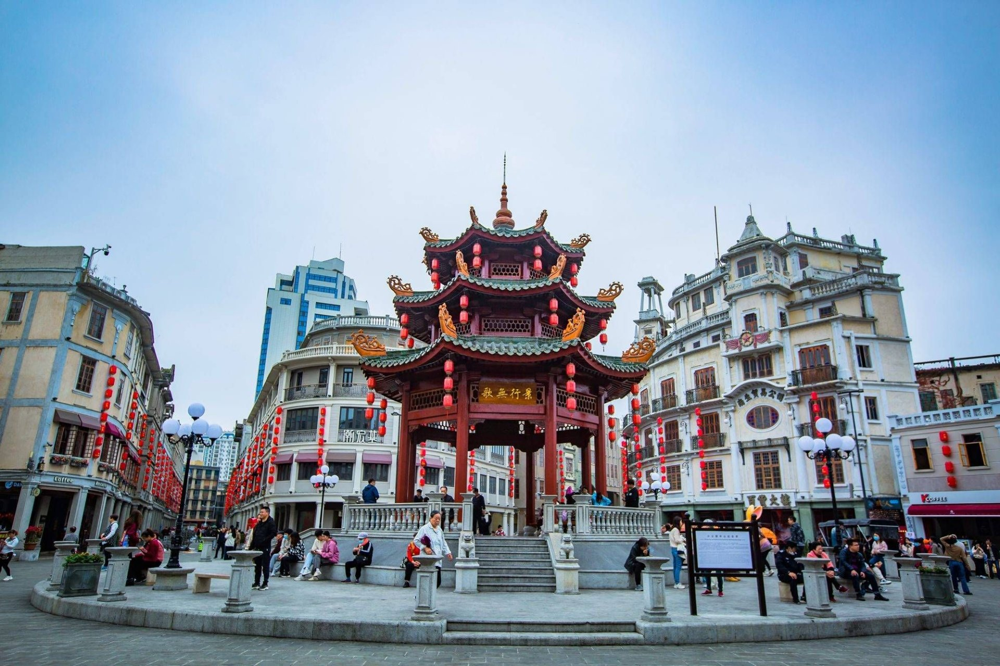
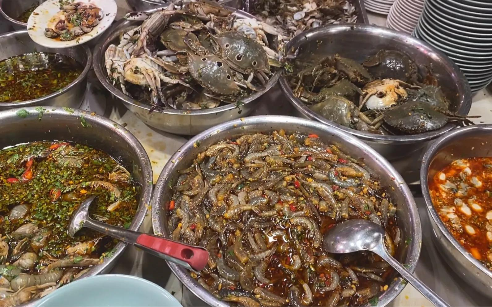

汕头在广东省东部沿海、韩江入海口一带，是潮汕文化的重要发源地之一，也是一座开埠较早的滨海城市。成片的骑楼老街、一句"食茶未"的工夫茶、傍晚的海风，还有怎么吃都不腻的潮汕菜，就是我印象里的家乡。
-

小公园 汕头老城的中心，一圈骑楼围着中山纪念亭，是这座开埠城市的标志。 -
海滨路的日落 傍晚沿着海滨路走一段，看太阳一点点落到桥后，海面被染成金色。 -
牛肉火锅 潮汕牛肉火锅讲究现切现涮，一锅清汤配不同部位的肉，越简单的做法越见功夫。 -

生腌 本地人叫它"潮汕毒药"——腌虾、腌蟹、腌血蚶用酱油蒜辣一拌，一吃就停不下来。